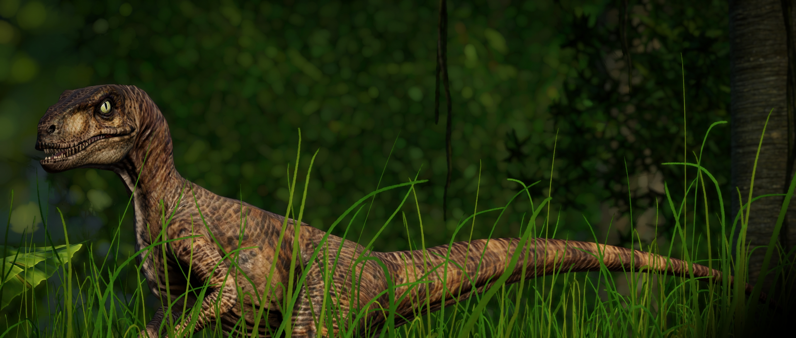

A reputação do Velociraptor como um dos dinossauros mais terríveis não vem de seu tamanho (com apenas 4 m de comprimento, ele é menor que muitos gêneros menos intimidantes) mas de sua ferocidade e inteligência. Com seus dentes grandes e afiados e garras em forma de foice, ele é um predador altamente eficiente, que ataca o Tsintaossauro, o Driossauro e outros, embora sua relativa falta de força signifique que é improvável que ataque dinossauros grandes ou encouraçados.